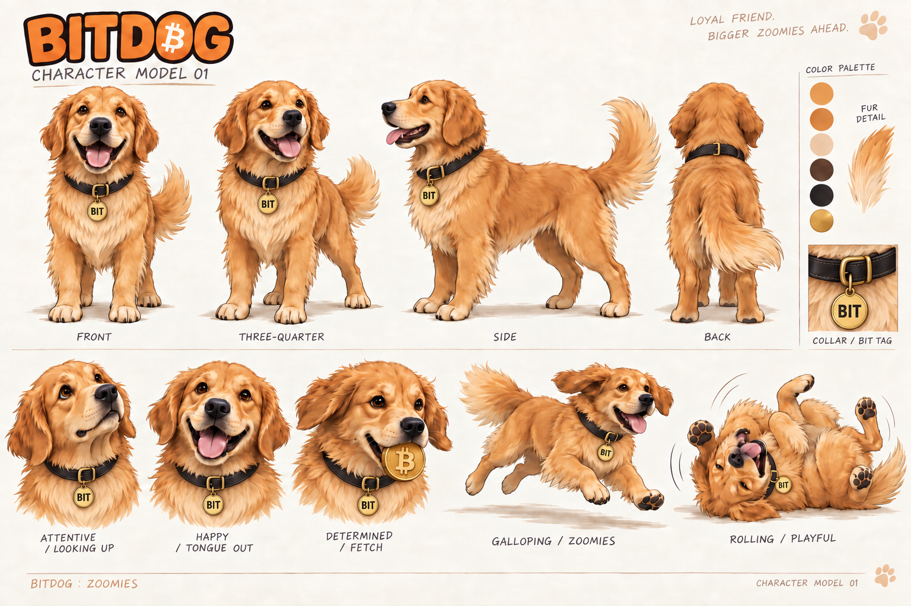
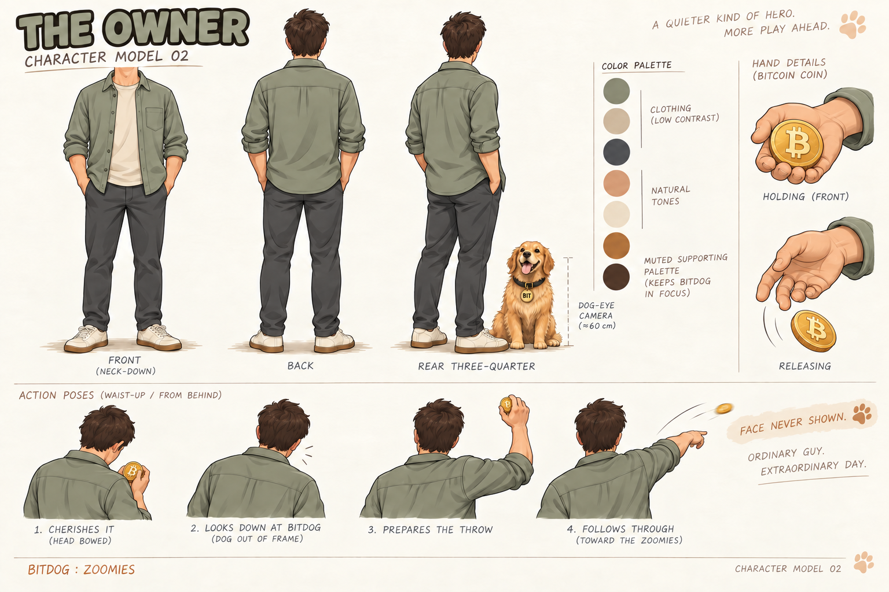

BitDog. The first fetch.
Three shots. One very good boy.
A 10.8-second opening with continuous Kling V3 Pro animation for the throw and run. The owner stays anonymous, BitDog carries the emotion, and the flight shot uses Satoshi Park's own scenery. This silent preview records the game's actual canvas.
01 / THE INVITATION · 4 sThe owner checks the Bitcoin, looks down at BitDog and throws. We only see the owner from behind.
02 / THE FLIGHT · 3.5 sOwner's POV. The coin sails over Satoshi Park and disappears in a small pulsing star.
03 / THE ZOOMIES · 3.3 sBitDog gallops through the park in a continuous tracking shot, keeping his complete face visible. Then the level begins.
BitDog / Character model 01
Based on the actual website retriever. Honey-gold fur, darker floppy ears, cream muzzle and an black leather collar and round gold BIT tag.

The owner / Character model 02
Muted clothing and dog-eye framing. No face appears: front views stop at the neck; head views are always from behind.
